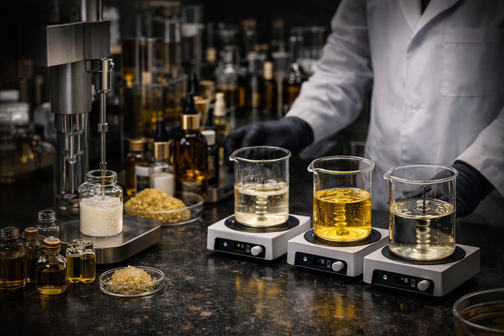
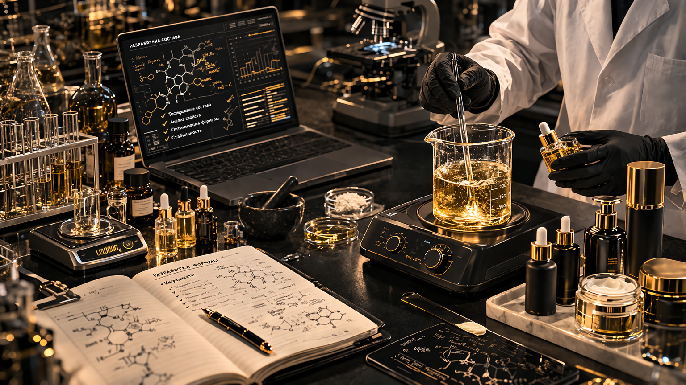
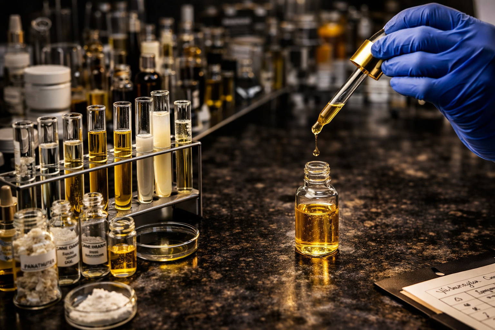
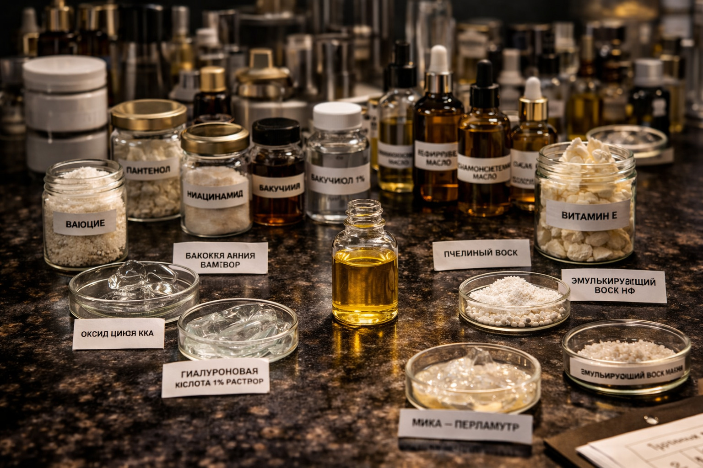
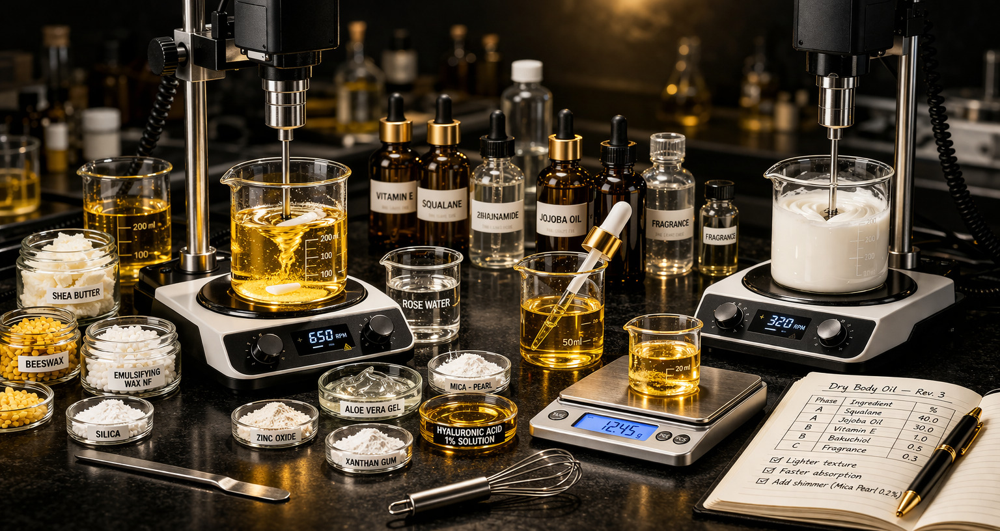

О лаборатории
Практическая разработка косметических продуктов — от идеи до готовой формулы
Gorbulev Lab — это лаборатория разработки косметических продуктов, основанная на практическом подходе к созданию формул.
Разработка ведётся через тестирование, доработку и повторные итерации, пока продукт не достигает стабильного результата.

Подход к работе
В основе разработки лежит не только подбор компонентов, но и оценка поведения продукта в реальной работе.
Мы уделяем внимание:
- стабильности формулы
- удобству применения
- ощущениям при использовании
- повторяемости результата

Процесс разработки
Тестирование состава
Работа с ингредиентами
Смешивание компонентовПроцесс разработки
Разработка
Подбор состава и компонентов
Тестирование
Проверка продукта в работе
Доработка
Улучшение и корректировка формулы
Результат
Готовый продукт
Разработка в Gorbulev Lab — это последовательный процесс, направленный на создание рабочих и стабильных решений.
Лаборатория находится в стадии активного развития, расширяя направления и ассортимент продуктов.